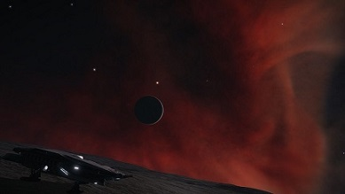

Elite: Dangerous
What is it?
Elite Dangerous is a space-flight simulation game published by Frontier Developments. Based in the year 3305, you are a pilot operating a spaceship (think of it as your car) in a full-scale representation of the Milky-Way Galaxy. You read that right. Roughly 400,000,000,000 star systems for you to explore, trade between star systems, participate in bounty-hunting wanted ships, and even pirate other ships for their cargo.

History
Fly Safe CMDR o7
Since it was started via kickstarter campaign in November of 2012, Elite: Dangerous has since grown and has been available for testing since December of 2013. The final game was released for the Windows OS in December of 2014, with a later Mac OS version released in May of 2015. In 2015 during Microsoft's Electronic Entertainment Expo, a preview version of the game was revealed and realeased that very same day. I started playing minutes after the announcement personally. I had never experienced a game like Elite before, and I was hooked. Later in June of 2017, a Playstation 4 version was also released. All platforms affect the same background simulation, but cannot play together. Elite: Dangerous is playable in VR on PC on both the HTC Vive and Oculus Rift.
Gameplay
Out now for PC,Xbox One, and Playstation 4
Elite: Dangerous has much to do, but has a bit of a learning curve.
The galaxy is a scary place. It is filled with both NPC's and players
who would love a shot at your tasty cargo. That said, here's a look at
what you can do in Elite: Dangerous.
Bounty Hunting and Weaponry:
Bounty Hunting is the original way of making money at the games' release. You kill criminals after scanning them with a Kill Warrant Scanner, and you go to
a station to collect your bounty. You could also pirate vessels as well (however the mechanics don't allow for much yet), but combat in general
has been made more fun with each patch considering the addition of Anti-Xeno weapons, Guardian weapons such as the Shard and Guass Cannons. Generally, combat is a form of rock, paper, scissors
where speed, shielding, and weapon damage determine how a dogfight plays out. In addition, the players' skill comes greatly into the light as the best players will fly
without flight assist in the zero-G environment, allowing much more precise flight manuevers. When it comes to weapons, Lasers are thermal weapons and are good against shields, Missiles
are explosive weapons and are good against armor, and finally guns and cannons are projectile weapons and are also good against armor. However, wepaons can also be
customized at engineers to increase their effectiveness.
Mining:
Newly patched is Mining! Recently, mining got a major overhaul allowing players to bring in massive amounts of credits in a short amount of time. The downside to this is that the mining areas deplete, and force players further away from populated space to find pristine mining sites. Still, it's not unheard of for a typical player to bring in several hunded million credits in a few hours. Plus, you get to blow up asteroids! Finding the most valuable commodities requires blowing up asteroids, which is good fun.
Engineering and the Technology Broker:
Equipment is extremely interesting. Think of your ship like your car in real life. Nearly every part of your ship can be customized. This opens up the potential for weapons that can be developed using alien technology as the community as a whole discovers new things. Humanity has already discovered both the Thargoids (a hostile alien threat) and the Guardians (a long deceased organic race that left behind AI constructs). On top of that, the Engineers exist, and they can upgrade and fine tune your ships modules to your liking. For example, your engines can get dirty drive tuning, which will increase your speed, but increase your heat output as well.
Exploration:
Exploration is by far my personal favorite thing to do because there are plenty of things to find in the game. Not only can you discover new systems and have your name placed on them (and the planets), but you can also find strange (and realistic) biological lifeforms in deep space. I have heard of commanders coming across Lagrange Clouds (a gaseous deep space cloud) with strange, creepy crystals. Another commander reported space mushrooms that reacted and moved away from light. I have yet to enounter this myself, but you can be sure I will be posting pictures when I do.
Some useful links while playing:
News
DW2 Expedition Reaches the Omega Nebula
This week, the Distant Worlds II Expedition CMDR's reached the Omega Sector VE-Q b5-15 system in the Omega Nebula, where they will be spending the next seven days mining in order to complete the community goal.
What is Distant Worlds II?
Distant Worlds II (DW2), also known as Distant Worlds 3305, is the sequel to the first major community
expedition in Elite: Dangerous history. Distant Worlds II was announced on October 10, 3303 and those who signed up
launched from the Pallaeni system on January 13, 3305 (January 13, 2019). The expedition contains over 13,000 brave
commanders from all over the world. The full expedition will last 4 months, ending on May 10th, 3305 at Beagle Point.
The Expedition is expected to visit 15 waypoints (points of interest) where the group will be meeting up. Commanders
coordinate over discord fleetcoms where I expect it will be complete chaos.
Commanders along on the expedition fulfill various roles of support to keep everyone going:
Explorer - Explorers make up the majority of the fleet and are made up of those who can't be bothered with specialization.
Explorers are tasked with discovering interesting stellar, planetary, and environmental points of interest. Explorers help
to map the galaxy; the very best of which become tour guides.
Fuel Rat - Fuel Rats are originally a playergroup dedicated to helping stranded pilots return to populated space. Fuel Rats are
invaluable. They're the last resort of pilots stranded in the depths of space.
Miner - Expeditions of the past didn't contain miners due to the fact that the extra cargo lowers a ship's jump range
significantly. This time, community goals are being run at certain deep space stations in order to facilitate construction
of new stations in the area. Miners have a role to play for the first time in expedition history.
Fleet Mechanic - Mechanics are Commanders who rig their ships to carry Hull Repair Limpets and are always on hand to offer their
repair services to fleet members in need.
Tour Guide - Tour Guides have a fun job. TG's work with the Galactic Travel Agency and make use of Multi-Crew mechanics to allow other
commanders and guests a remote presence to experience everything the distant sights have to offer. Typically, these guides use Belugas, Orcas, or
Dolphin-class cruisers to give the best view.
Astrophotographer - You know what a photographer is. The astrophotgraphy project is headed by Qohen Leth for the official DW II Imgur Album.
Photographers in the fleet are encouraged to submit their photos to the page. The best submissions will be highlighted and posted about in the DWII weekly
newsletter. There are rumors of prizes for each pic of the week.
Fighter Escort - Commanders flying the DWII Fleet Defense Force flag will be tasked with protecting the fleet throughout the long
journey to the far rim and back. I'm told details are classified at the moment.
Geologist - The focus of the Geologist squadron is to seek out and record data on various geographical sites and surface features
for the Milky Way Society of Organics and Geology (Headed by CMDR MadRaptor), and the Galactic Mapping Project (overseen by the GMP team). I have personally
participated in this initiative. o7
Scientist - The role of scientists is to catalogue Notable Stellar Phenomena for the Galactic Mapping Project. The GMP can be accessed
here and also consists of a map of locations of various players, which is very interesting to look at.
Media - The media consists of Video Editors, Streamers, and Blog Writers who document their own journeys and share them with the rest of the
community. Much of the media will also have their content featured in upcoming newsletters.
MediCorp - The MediCorp are a semi-roleplayed group created by Wing Atlantis. MediCorp pilots will be attempting to collect stranded
escape pods that are found during the course of the expedition and store them safely aboard their ships until they can be delivered to stations and restored.